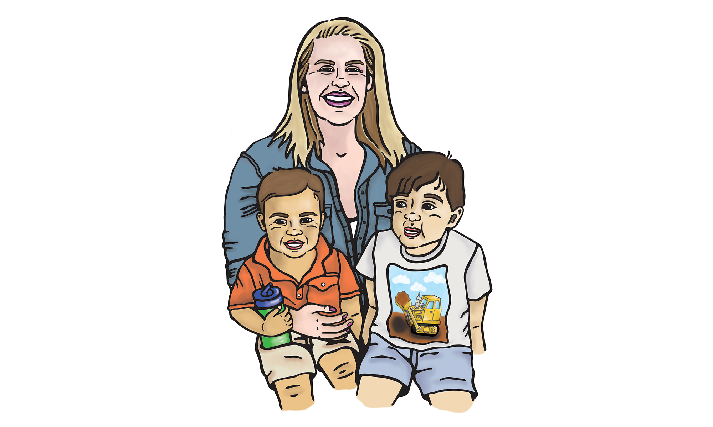

    
    <div class="portfolio island">
        <div class="grid">
            <div class="portfolio-full unit unit-xs-1 unit-s-1 unit-m-1 unit-l-1-2">
                
            </div>
            <div class="portfolio-full-info island-2 unit unit-xs-1 unit-s-1 unit-m-1 unit-l-1-2">
                <h1>Commissioned Illustration</h1>
                <p> An old colleage asked me to draw a portrait of herself with the two children that she nannies. The challenge was creating a composition where all three individuals looked like they were part of the same portrait (only having reference photos of each person by themselves).</p>
            </div>
        </div>
    </div>